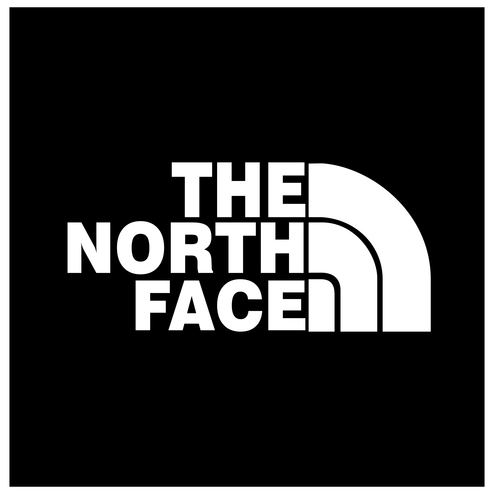

Oportunidades comerciales identificadas en categorías de consumo y B2B
Optimización de portfolio Travel Retail
Decide qué productos merecen espacio e inversión
Ayudamos a equipos FMCG a convertir datos fragmentados de SKU, categoría, cliente y shopper en una estrategia clara de portfolio para Travel Retail, utilizando IA cuando mejora la velocidad y profundidad del análisis
Convertidos en oportunidades concretas junto a equipos comerciales
Experiencia en portfolio, pricing, marca y negociación con clientes
Ejemplos de entregables
Descarga un modelo realista de priorización de portfolio
Un modelo Excel ficticio de 12 SKUs con ventas, margen, rate of sale, distribución, formato de pack, ocasión de viajero, riesgo de canibalización, rol estratégico y recomendación de portfolio
Modelo ilustrativo con SKUs ficticios y datos sintéticos. Diseñado como preview realista del tipo de análisis en Excel que puede recibir el cliente
Marcas y compañías con las que hemos colaborado


Qué recibes
Outputs diseñados para una decisión real de gama
El formato se adapta a los datos y a la decisión, no a un informe estándar
Recomendación para dirección, lógica, trade-offs y próximos pasos
Scoring, segmentación y comparación de escenarios en Excel
Vista utilizable de roles, performance, gaps y prioridades
Racional de gama y evidencia para conversaciones de listing
La decisión
Una gama amplia no siempre es un portfolio sólido
Travel Retail añade restricciones particulares: espacio limitado, shoppers internacionales, roles específicos de pack, economía del cliente y un alto coste de complejidad. La lógica del mercado doméstico rara vez se traslada sin ajustes
Creamos un rol basado en evidencia para cada parte del portfolio y hacemos explícitos los trade-offs para que marketing, ventas y categoría trabajen con el mismo modelo de decisión
¿Dónde funciona la gama?
Leemos conjuntamente performance, distribución, cliente y categoría
¿Qué rol debe tener cada SKU?
Separamos roles de tráfico, margen, premium, innovación y cliente
¿Qué debe cambiar?
Creamos escenarios de mantener, retirar, probar e invertir
IA donde aporta valor
Síntesis más rápida, criterio comercial humano
La IA puede ayudar a clasificar portfolios amplios, conectar evidencia fragmentada, detectar patrones y acelerar escenarios. La recomendación final se mantiene anclada en la realidad del cliente, las restricciones del negocio y el criterio especialista
El enfoque en práctica
Cuándo la distribución escala relevancia y cuándo no
Un análisis publicado que muestra cómo Marksyte plantea decisiones de portfolio, relevancia de marca y distribución